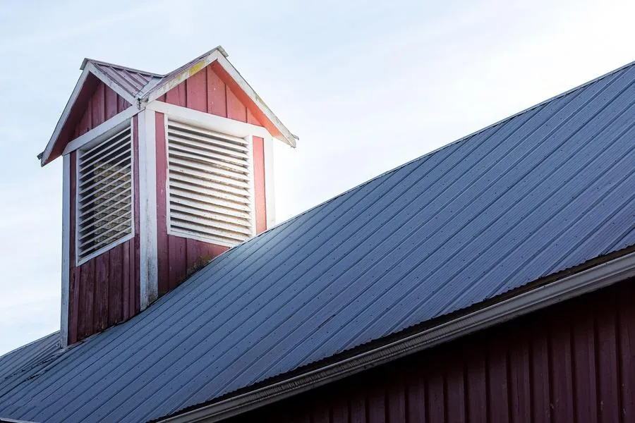
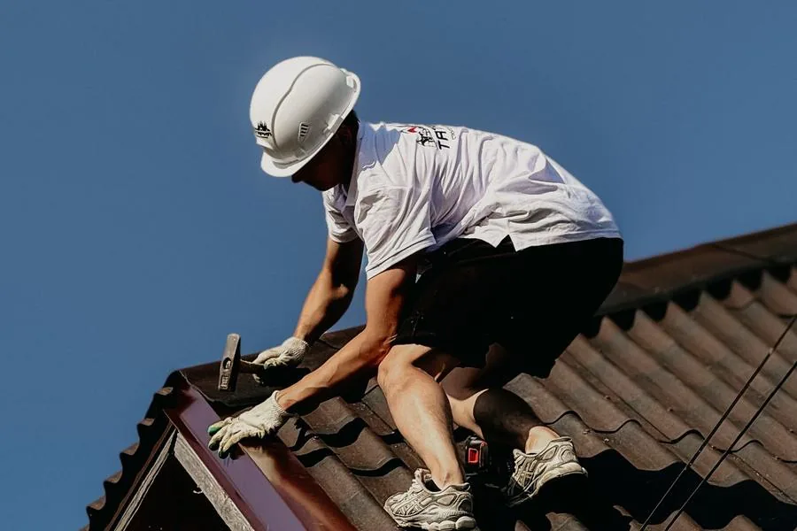
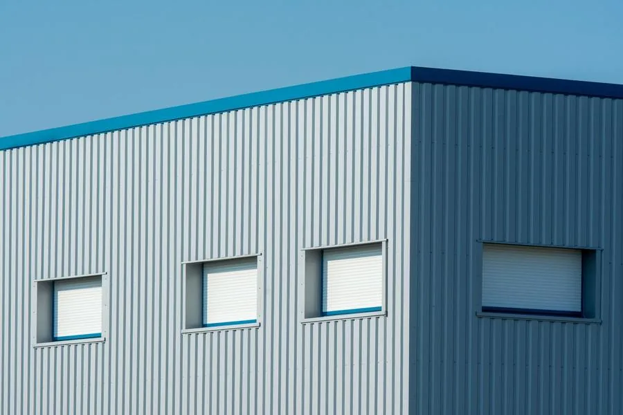
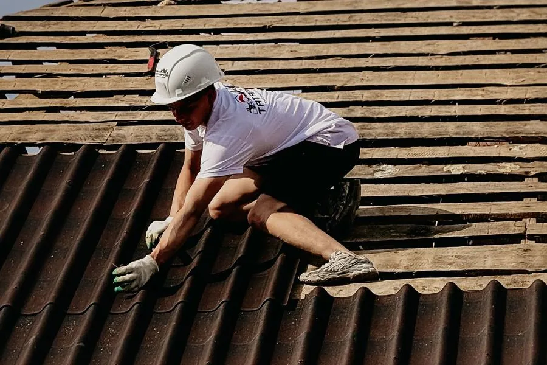

Paslaugos
Dengiame stogus, skardiname, lankstome skardą pagal jūsų matmenis, montuojame lietaus nuvedimo sistemas ir SANDWICH plokštes, taisome ir dažome stogus. Patys gaminame skardos gaminius, prekiaujame jais ir stogų dangomis, todėl medžiagas ir darbą gaunate iš vienų rankų.
-
Stogų dengimas
Nauji šlaitiniai ir plokštieji stogai, senų stogų keitimas gyvenamiesiems namams, ūkiniams pastatams, garažams.
Plačiau apie stogų dengimą
-
Skardinimo darbai
Kraigai, vėjalentės, karnizai, sąlajos ir kitos vietos, kur stogas turi būti sandarus.
Plačiau apie skardinimo darbus
-
Skardos lankstiniai
Palangės, parapetai, nulajos. Išlankstome pagal jūsų matmenis arba pamatuojame patys.
Atsiųsti matmenisLankstinys pagal jūsų matmenisMatmenys mm -
Lietaus nuvedimo sistemos
Latakai ir lietvamzdžiai: montavimas, keitimas, remontas.
Plačiau apie lietaus nuvedimo sistemas -
SANDWICH plokščių montavimas
Daugiasluoksnės plokštės sandėlių, gamybinių ir ūkinių pastatų sienoms bei stogams.
Plačiau apie SANDWICH plokščių montavimą
-
Stogo remontas ir dažymas
Randame, kur prateka, ir sutvarkome tą vietą, o ne visą stogą.
Plačiau apie stogo remontą ir dažymą
Kainos ir kitos paslaugos
Kainų sąraše neskelbiame, nes kiekvienas stogas ir kiekvienas objektas kitoks. Kainą pasakysime apžiūrėję objektą arba gavę lankstinių matmenis.
Jei savo darbo šiame sąraše nematote, vis tiek parašykite arba paskambinkite: pasakysime, ar galime jį atlikti. Dirbame Plungėje, Telšiuose, Mažeikiuose, Skuode ir visoje Žemaitijoje.